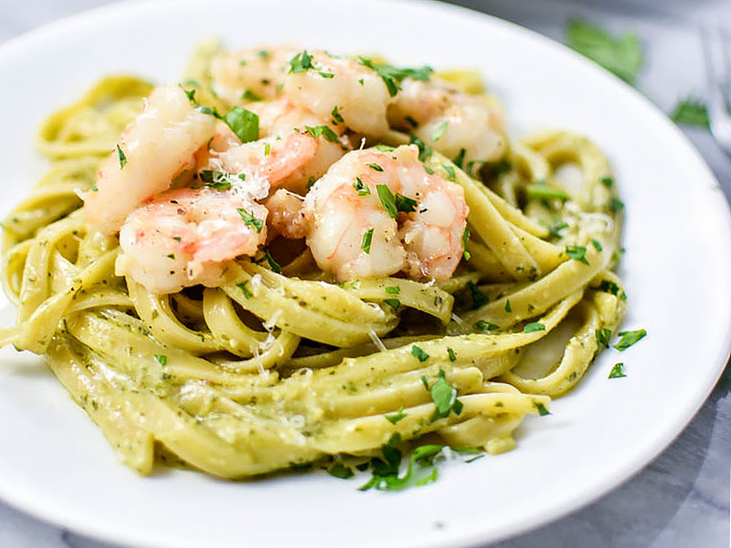

приготовление:
-
Поставить вариться 200 г любимой пасты по инструкции на упаковке. Особенно хорошо подойдут ракушки: соус и кусочки начинки будут попадать внутрь.
-
Пока варится паста, оставить 165 г креветок целыми или нарезать кусочками — как больше нравится. Разогреть сковороду с небольшим количеством масла, добавить креветки и обжарить до готовности.
-
Перед тем как слить пасту, оставить немного воды от варки. Вернуть пасту в кастрюлю, добавить обжаренные креветки и 1 ст. л. песто. Перемешать, при необходимости добавляя понемногу оставленную воду, чтобы соус лучше распределился.
-
Разложить пасту по двум тарелкам и посыпать 20 г тёртого пармезана.